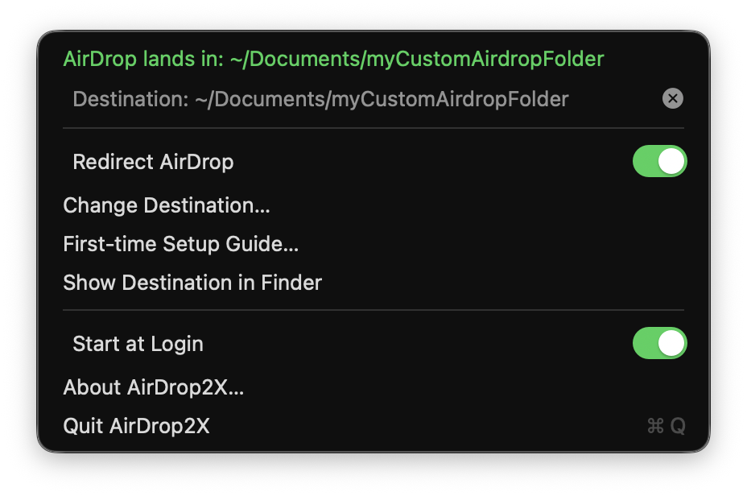
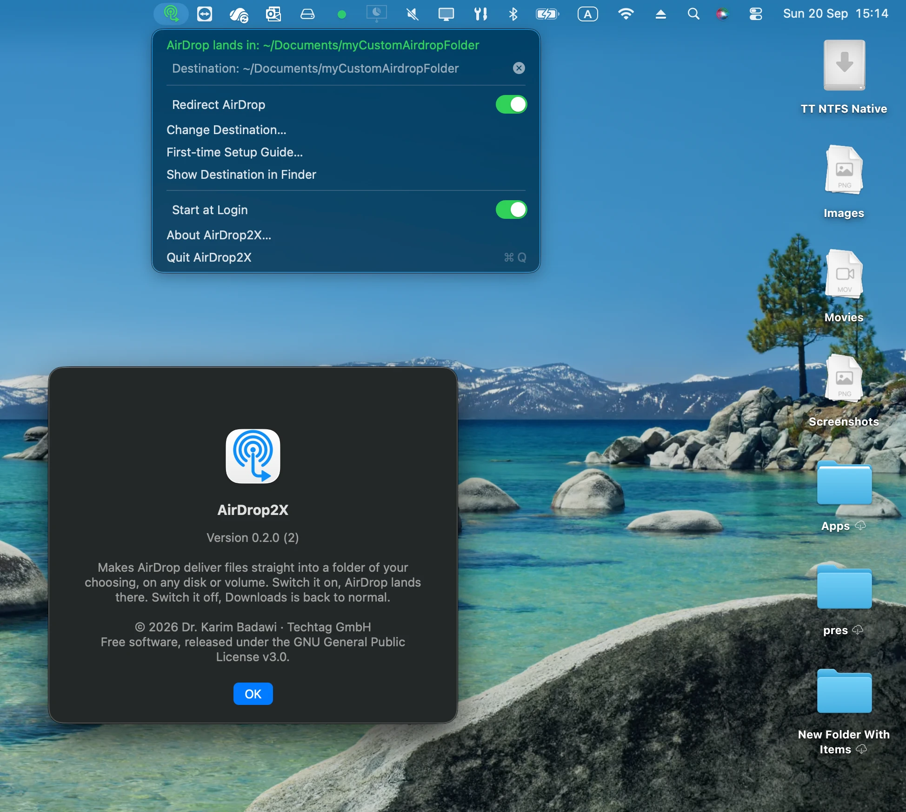

AirDrop lands where you want it. Any folder, any disk. Free and open source.
macOS drops every AirDrop into Downloads on the internal disk, and there is no setting to change that. AirDrop2X gives you the switch Apple left out: choose a folder — on an external SSD, another volume, wherever — and while the switch is on, files you receive land there directly. Switch it off and Downloads is back to normal.
Backing up 4K video from an iPhone by AirDrop goes like this: wait for the file to land in Downloads, copy it to the external disk, delete it from Downloads to make room for the next one, repeat. Every file crosses the internal disk twice for no reason, and if a clip is bigger than the free space left, it does not arrive at all.
AirDrop2X removes the detour. The file is written by macOS straight into the folder you chose. Nothing is copied afterwards, nothing has to be cleaned up, and the internal disk is never involved.
The AirDrop daemon in macOS, sharingd, asks the system for the user’s Downloads folder and writes there. There is no preference for it. But before writing, it resolves the real location of that folder, symbolic links included. That is the one lever there is, and AirDrop2X pulls it: while the switch is on, ~/Downloads points at your destination; your real Downloads folder is parked next to it, untouched, and comes back the moment you switch off.
Internal disk, external SSD, another partition, a disk image. If it is a folder you can write to, it can be the destination.
On for the backup session, off when you are done. A menu bar icon shows the state at a glance: redirecting, off or waiting for the disk, no destination yet.
Files are not moved after arrival. macOS writes them to the destination in the first place, so a 20 GB clip needs 20 GB on the destination and nothing on the Mac.
Switching off removes the link and renames the parked folder back. Your downloads, their order, their dates: all exactly as before.

Anything that touches your Downloads folder has to be paranoid. AirDrop2X never deletes anything except the link it made itself, and refuses to act whenever the folders are not in a state it recognises. On top of that:
If the destination disappears — disk unplugged, share dropped, folder renamed — the real Downloads folder is back within two seconds, so nothing ever points into the void. When the disk returns, the redirect resumes.
Quitting the app restores Downloads. After a crash, the next launch inspects what it finds and puts things right before doing anything else. The switch is only on when the redirect is genuinely in effect.
If macOS ever refuses the redirect and falls back to its temporary folder, AirDrop2X notices within seconds, moves the file to your destination, and tells you what happened and why.
People forget switches. While the redirect is on, every five minutes a small dialog asks whether to keep it on. One click either way.
There is one thing only you can do. Since the file is written by Apple’s daemon and not by the app, the daemon needs permission to write outside Downloads. macOS grants that only through Full Disk Access in System Settings, and no app can add an entry there on another program’s behalf — by design.
AirDrop2X makes it a two-minute job the first time you switch on: it opens the right page, puts the exact path on your clipboard, and walks you through the four clicks. Then it asks you to AirDrop any file to your Mac and watches where it lands. If it arrives in your folder, setup is done for good. If not, the app moves the file to your folder anyway and shows you the reason straight from the system log.
Why a real transfer instead of a check box: the permission belongs to sharingd, not to the app, and macOS lets no app read another program’s permissions. The only honest test is watching the daemon write a file.

Prefer the Terminal? The repository’s command-line companion (built from source) does the same: airdrop2x destination <folder>, airdrop2x on, airdrop2x off, airdrop2x status. It shares the app’s settings.
While the switch is on, everything that saves into ~/Downloads by path — Safari, Mail, anything — lands in your destination too, because that is what the path resolves to. Many people want exactly that during a backup session. If you do not, switch off between transfers; it takes one click and is instant.
The only operations are a rename of the folder, a symbolic link, and the reverse. No file inside Downloads is ever read, moved or deleted. The state machine that does this is covered by a test suite exercising every transition, including crash leftovers, and the app refuses to proceed whenever the folders are not in a state it recognises.
macOS guards external and network volumes per program. A regular app gets a permission dialog the first time it touches one; a background daemon has no window to ask with, so its answer is a silent no. Apple pre-grants its daemons what they need through entitlements, and sharingd was never given external volumes because Apple never expected it to write anywhere but Downloads. Adding it to Full Disk Access is how you, the user, give it that permission. It is one entry, once.
Within two seconds the real Downloads folder is back and the menu bar icon turns orange with “waiting for … to come back”. Plug the disk in again and the redirect resumes by itself. If you quit and relaunch the app while the disk is away, the switch turns itself off and tells you why.
Finder’s sidebar and the Dock’s Downloads stack track the folder by identity rather than by name, so while the redirect is on they may keep pointing at the parked folder. It is cosmetic and reverts when you switch off. Use “Show Destination in Finder” from the menu to see arrivals.
The mechanism is the same and the Full Disk Access grant covers network volumes too, but it has only been exercised with local disks so far. Treat network destinations as untested.
Built and tested on macOS 26 on Apple Silicon. The code targets macOS 13 and later, but earlier versions have not been tried, and there is no Intel build yet.
Free, open source under the GPL-3.0, no account, no telemetry, no paid tier. It exists because one person got tired of the Downloads detour and found that macOS leaves exactly one honest way around it. Techtag GmbH built it and is giving it away.
GitHub issues. Include the macOS version, where the destination lives, what the menu bar showed, and the last lines of ~/Library/Logs/airdrop2x.log.
A small Swift app with no dependencies: a core library that owns the redirect state machine and the watchers, a menu bar app on top, and a command-line companion sharing the same settings. Everything is under the GPL-3.0, with a test suite for the core, the app and the command-line tool, run on every change. The investigation of how sharingd chooses its destination — the disassembly, the sandbox profiles, the permission checks — is written up in docs/HOW-IT-WORKS.md so that anyone can verify the claims on this page.